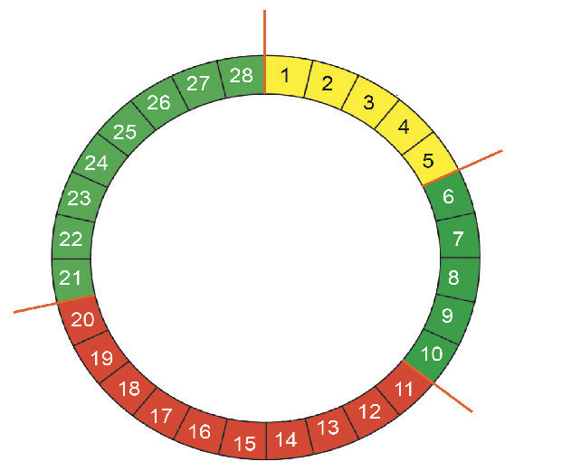

The menstrual cycle refers to the period from the first day of menstruation to the day before the next period. It usually lasts 28 days as shown in Figure 7. However, some women have cycles that range between 21 to 35 days.

- Menstruation: days 1 to 5
- Ovulation: day 14
Menstrual bleeding occurs when the uterine lining, which was built to prepare the uterus to receive a fertilised egg sheds off. The duration of menstruation varies from person to person. Typically, menstruation lasts between 3 to 5 days, though some women may have shorter periods, while others may experience longer periods of up to 7 days. During menstruation special materials called sanitary pads or sanitary napkins are used to absorb the blood that comes through the vagina. It is advised to use cotton-made pads. Pads are attached to the inside of underwear with adhesive strips or wings. It should be changed regularly typically after every 3 to 4 hours, in order to maintain hygiene and prevent effects that can rise like rashes or infections.
Draw a one-month menstrual cycle of 21, 28 and 32 days.
Disorders in the menstrual cycle
Sometimes, irregularities or disorders occur in the menstrual cycle. Some of these irregularities include discomfort during menstruation, lack of menstruation periods, severe menstrual pain, and prolonged or excessive bleeding during the menstruation period. These conditions may be caused by hormonal changes, stress, or underlying health issues.